Lab Members
Graduate Students
Jonathan Hudson
B.S. Molecular and Cellular Biology, Cedarville University, 2020
Ph.D. Biology, Rensselaer Polytechnic Institute
Jonathan is co-advised by Proffesors Koffas and Linhardt and investigates projects ranging from biosensor development to the fundamental biology of cell to cell variation in bacteria. His more recent collaborative work with Dr. Yinjie Tang involves developing molecular biology tools and pathway engineering in nonmodel yeasts. Moving forward, Jonathan intends to transfer his experience to industrial microbiology and continue to develop underutilized strains for specialized biomanufacturing.
Saurabh Rastogi
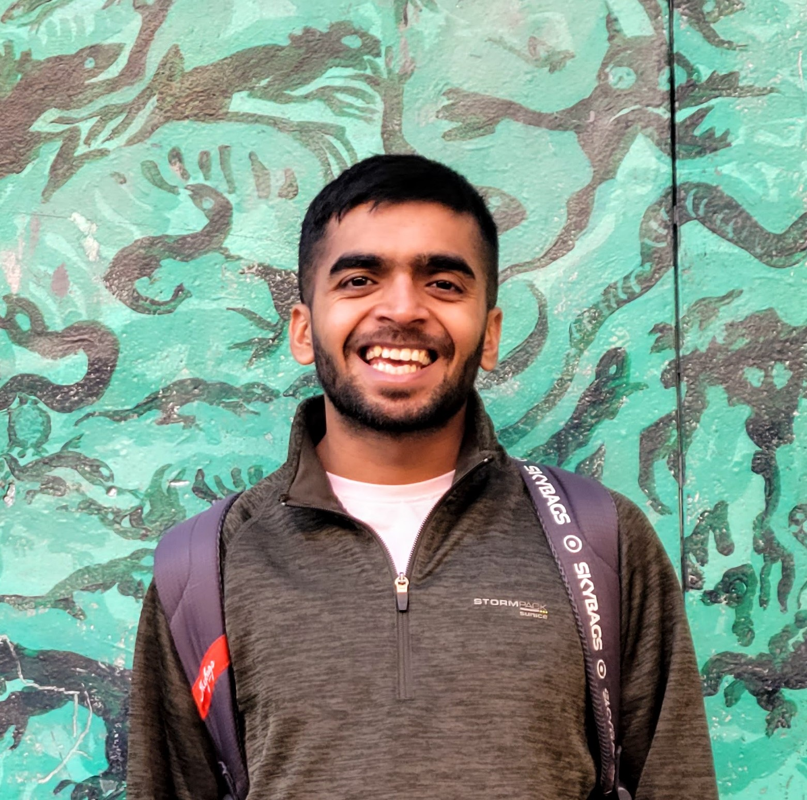
B.Tech. Biotechnology, Guru Gobind Singh Indraprastha University, 2019
Ph.D. Chemical and Biological Engineering, Rensselaer Polytechnic Institute, Expected December 2025
Co-advised by Professors M. Koffas and J. Dordick, Saurabh's project involves developing microbial hosts for
energy-efficient biomanufacturing of platform chemicals like succinic acid. He is currently working on engineering an E. coli strain for cell-free biosynthesis and detoxifying the system of adventitious metabolites.
He aims to pursue a career in sustainable biomanufacturing.
Josh Finkelstein
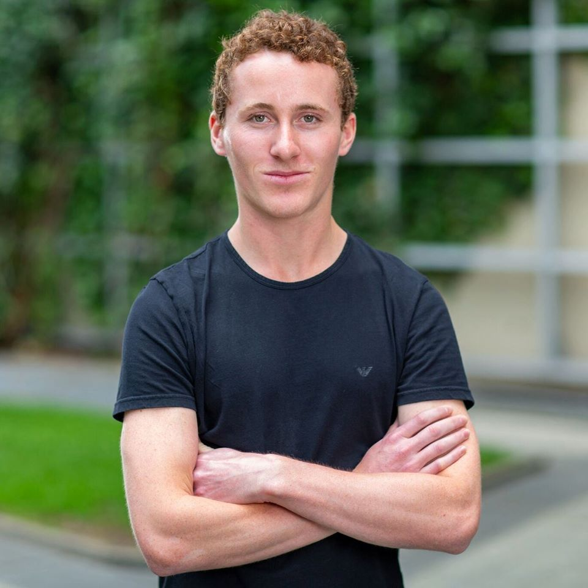
B.S. Chemical Engineering, Northeastern University, 2018
Ph.D. Chemical and Biological Engineering, Rensselaer Polytechnic Institute, Expected May 2025
Josh's work focuses on the development of production strains and process design for the synthesis of succinic acid using electrochemical bioreactors. He is interested in the function of complex biological systems and the development of methods to manipulate them to achieve a desired outcome. Josh plans to pursure a career in developing biomanufacturing processes for accelerating research and development.
Aditi Dey Tithi

B.Sc. Chemical Engineering, Bangladesh University of Engineering and Technology (BUET)
Ph.D. Chemical and Biological Engineering, Rensselaer Polytechnic Institute, Expected May 2026
Aditi, mentored by Prof. Koffas and Prof. Linhardt, is working on a project aimed at achieving complete microbial synthesis of different types of chondroitin sulfates using protein engineering and metabolic engineering strategies. Her dedication to unlocking a sustainable source of sulfated chondroitin has fueled her ambition to continue pioneering innovative biotechnological solutions for the pharmaceutical industry's future needs.
Sahiti Tamirisakandala
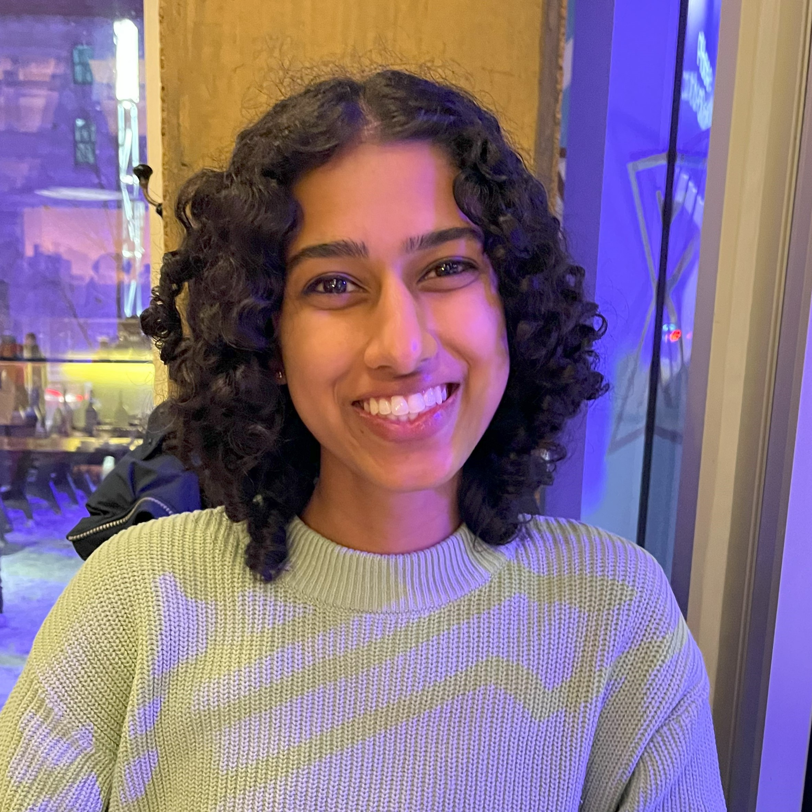
B.S. Chemical and Biomolecular Engineering, Ohio State University, 2022
Ph.D. Chemical and Biological Engineering, Rensselaer Polytechnic Institute, Expected May 2027
Coadvised by Professors M. Koffas and R. Zha, Sahiti's project focuses on the application of recombinant proteins as a sustainable alternative to petrochemical derived dyes and textiles.Engineering recombinant proteins and microbial systems, Sahiti aims to optimize the production of these materials for commercial scale application. In the future, she plans to continue working toward a sustainable cause in an industrial setting.
Md Tariful Islam
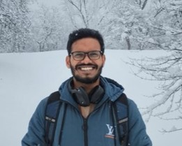
B.Sc. Chemical Engineering, Bangladesh University of Engineering and Technology (BUET), Bangladesh, 2021
Ph.D. Chemical and Biological Engineering, Rensselaer Polytechnic Institute, Expected May 2027
Co-advised by Professor Mattheos Koffas and Jonathan Dordick Tarif's current research focuses on industrial biocatalyst design which includes genetic and biomolecular engineering, and Machine learning. His current endeavor involves engineering Carbonic Anhydrase fusion proteins, with the goal of enhancing carbon capture and utilization through intensified algal bioproduction.
Prior to joining RPI, Tariful worked at the International Centre for Diarrhoeal Disease Research, Bangladesh (icddr,b), where he led a team that successfully improved the brick manufacturing process in Bangladesh to promote clean air. During his undergraduate studies, he researched plant-derived antidiabetic bioactive compounds, bio-preservatives, and biofuels, which further fueled his interest in sustainable and eco-friendly technologies. Rooted in Bangladesh, the river-laced land, his journey encapsulates interdisciplinary strides toward a greener future.
William Lawler
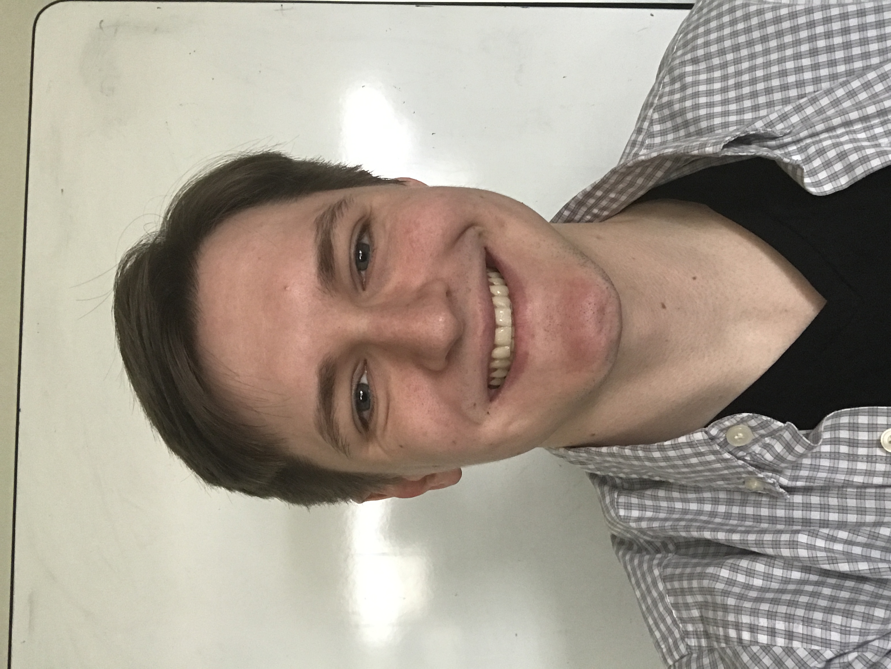
B.S Electrical Engineering, Rensselaer Polytechnic Institute
Ph.D. Chemical and Biological Engineering, Rensselaer Polytechnic Institute, Expected May 2027
Advised by Professor Mattheos Koffas, William's research focuses on the development of novel genome editing tools.
Steve Eshiemogie
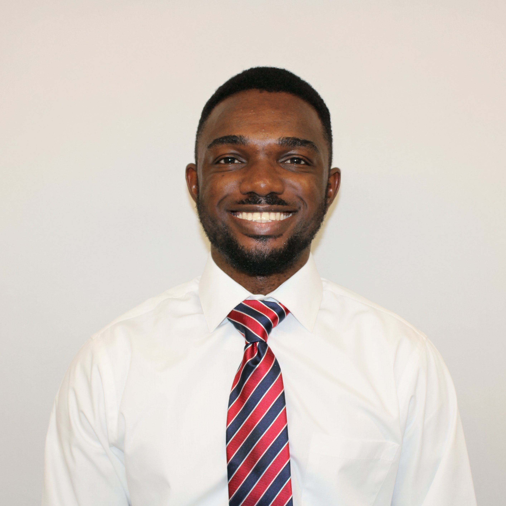
B.S. Chemical Engineering, University of Benin, 2021
Ph.D. Chemical and Biological Engineering, Rensselaer Polytechnic Institute, Expected May 2027
Co-advised by Professors M. Koffas and Chakrapani, Steve Eshiemogie's research endeavors center around pioneering applications of electrocatalysis for the reduction of CO2 compounds into valuable carbon intermediates, followed by intricate metabolic engineering of cellular systems to efficiently assimilate these electrocatalytically derived carbon intermediates into high-value products. Steve's primary focus within this collaborative project lies in the realm of metabolic engineering, where he seeks to optimize cellular pathways and enhance the capacity of microorganisms to convert carbon intermediates into commercially relevant compounds.
Post Doctoral Fellows
Anarul Hoque
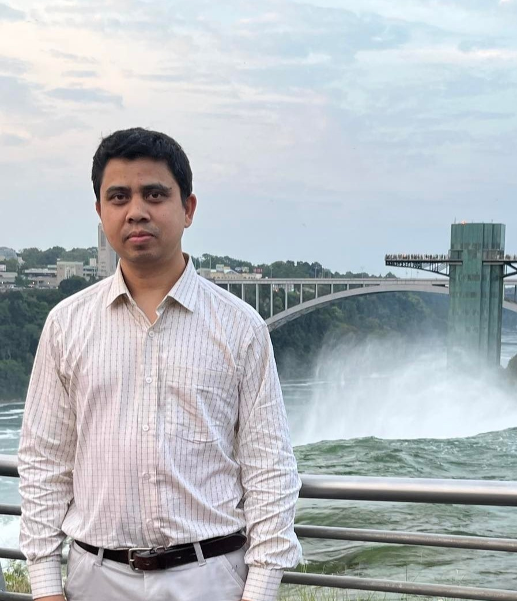
Dr. Anarul joined the group as a postdoctoral research associate in April 2021. His research focuses on protein engineering, peptide synthesis, and the construction of microbial gene circuits for uncovering biological design principles and advancing biotechnological applications. He developed a method "Stepwise loop insertion strategy (StLois)" in which random residue pairs are introduced in a stepwise manner, efficiently collating mutational fitness effects on active-site loops, ACS Chemical Biology, 12(5), 1188-1193 (2017). He has experience in multiple protein expression in E. coli and yeast cells and in designing synthetic gene circuits for biosensing purposes, Analytical Chemistry, 90, 10577-10584 (2018). Currently, his research focuses on proteolytic enzyme engineering for valuable peptide synthesis.
Shweta Patil
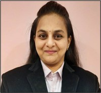
Dr. Shweta Patil is jointly working with Prof. Koffas and Prof. Gross as a Post-doctoral research associate. With total 6 years of industrial experience in aerobic fermentation, Shweta would now be involved in anaerobic culture characterization from anaerobic digester of glycol plant of Albany airport. She plans to use anaerobic chamber for culture handling and its processing. She would also be involved in improving product titers from E. coli fermentations.
Visiting Scholars
Douglas Norberto
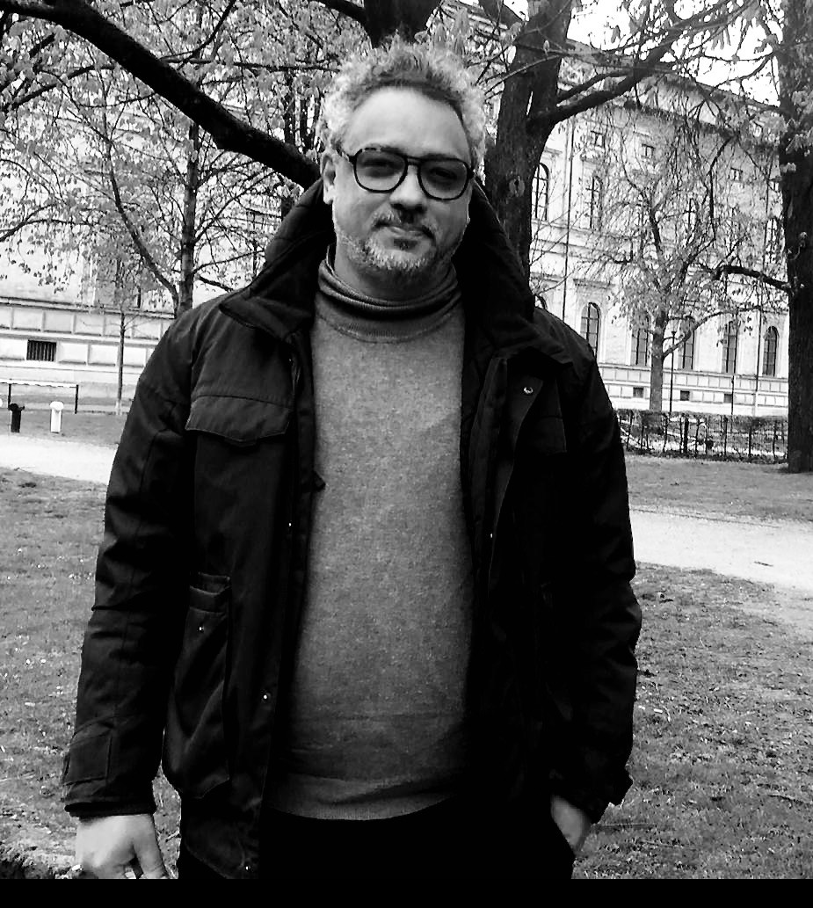
As Chemical Engineer with PhD in Functional and Molecular Biology (Unicamp, Brazil, and CBS Montpellier University, France), Dr.Norberto studies the thermodynamics of protein denaturation and aggregation, as well as conformational effectors that include ligands, temperature, and high pressure. At Technical University of Munich, in Germany, he is carrying out the p53-REACT project, which is funded by the European Commission's Marie Skodowska-Curie programme. In collaboration with Prof. Koffas' group at RPI, Dr. Norberto aims to engineer a bacterial host to produce resveratrol metabolite variants and study their interaction with the tumor suppressor protein p53. In the future, Dr. Norberto plans to fully elucidate the mode of action of small molecules such as resveratrol on the p53 mutants with a focus on new concepts for cancer therapy.
Suttavadee Junyakul
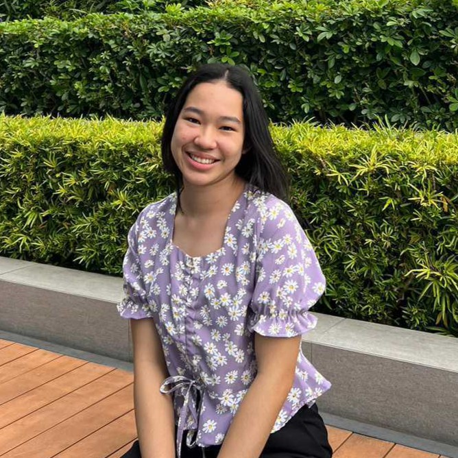
Suttavadee is currently a fourth year undergraduate student pursuing a degree in biology at Kasetsart University, Thailand. She specializes in microbiology where she has gained valuable experience manipulating microorganisms. In the future, Suttavadee hopes to study CRISPR-Cas technology for applications in yeast.
Undergraduate Students
Eric Bossenbroek
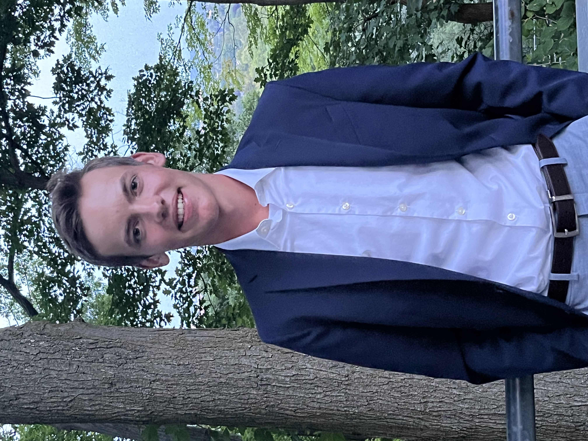
Eric is a second-year undergraduate at RPI pursuing a Bachelor of Science in Chemical Engineering and a minor in biochemistry. Eric is assisting Steve Eshiemogie with his research on reducing CO2 into valuable carbon intermediate via metabolic engineering to optimize cellular pathways